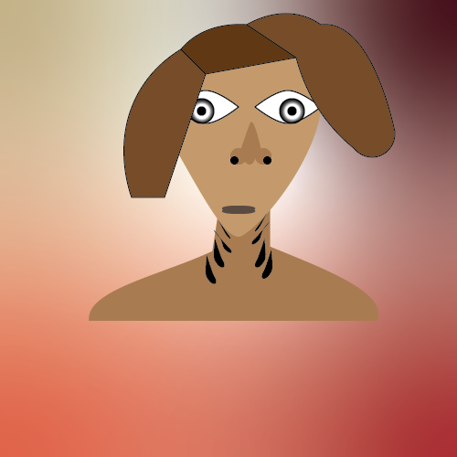

Fishboy is a mutant who got his gills and fish-like appearance from a toxic waste spill in the water where he spent a lot of time swimming. Now he lives in the ocean, trying to clean it up in order to improve the lives of his fish brethren, so they can swim freely once again!
He hopes to one day start his own water-based superhero team, but unfortunately for him there are no other fish mutant people to join him on his glorious and benevolent mission.
Here he is, in all his glory! His powers, are of course, the ability to breathe underwater. He can also swim pretty fast, but not that fast really, he's still no match for a regular fish or even Michael Phelps. To be honest, it's not even one of his powers, he was already a decent swimmer when he became the fish boy. However, he can withstand water pressure like no human, allowing him to explore the never before seen depths of the ocean! Well, a lot of it is very dark so he can't really see that well beyond the normal depth of humans, but that's besides the point! And don't forget, he can talk underwater perfectly, which allows him the amazing ability to talk to sea creatures! Although they don't talk back because they are fish, but once again that's besides the point. Fishboy's amazing powers will definitely one day probably do something to maybe help the world?